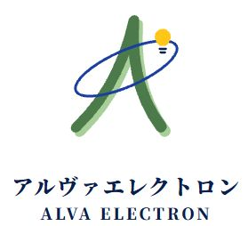

AI-Translator 体験版
お店の通訳機の画面を、ブラウザで操作できます。画面をクリック（スマートフォンではタップ）してください。
読み込んでいます…
これは体験版です。音声の認識・翻訳・読み上げは動かず、決まった例文が出ます。
読み込みの様子
…
操作のしかた
| 画面を触る | クリック（スマートフォンではタップ） |
|---|---|
| 会話スタート | 画面左下の緑のボタンを押すと、約 1 秒後に例文が出ます |
| キーボード | 画面をクリックしたあと、スペース＝会話スタート、Enter＝再生、Tab＝話す人の切り替え、Esc＝メニュー／戻る |
| 文字で伝える | 「文字入力」を押すと、画面のキーボードが出ます |
| 言語 | メニューの「言語変更」で、相手の言語を選べます（韓国語・英語・中国語・広東語・タイ語・フランス語・ロシア語・ポルトガル語）。日本語 ⇔ 相手の言語の例文が出ます |
| ガイド | メニューの「ガイド」で、見本の動画・スライドの画面に進めます（動画は再生の画面だけです） |
暗証番号（体験版の見本です）
| 一般の番号 | 1234 「店舗用」「音の設定」「電源・再起動」を開くとき |
|---|---|
| 管理者の番号 | 3957 「電源・再起動」→ 右上の「管理者」を押し、5 秒以内に画面の左上の角を押す → この番号 |
実際の店舗用の番号ではありません。管理者の画面の「暗証番号」のタブで、変える操作も試せます（ページを開き直すと元に戻ります）。管理者の画面の「利用状況」のタブでは、日ごとの翻訳・訂正・定型文の数（言語別）と、最高温度のグラフを、見本のデータで見られます。